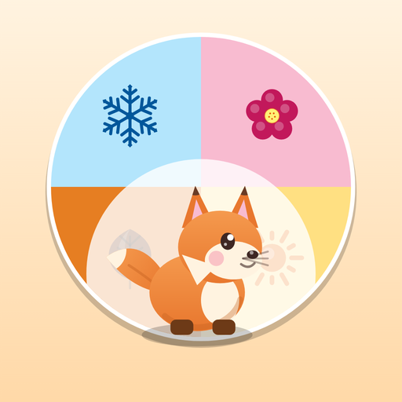
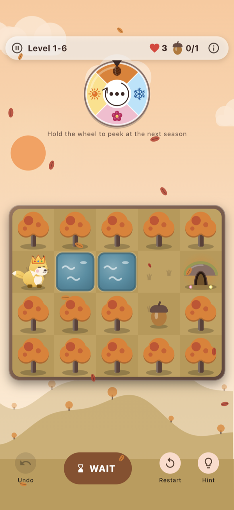
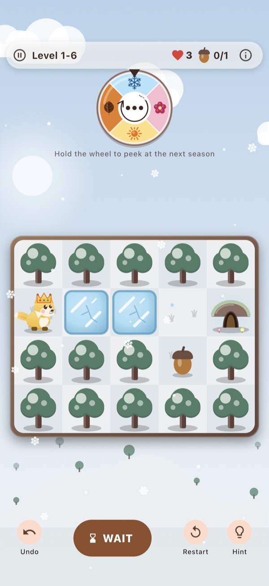
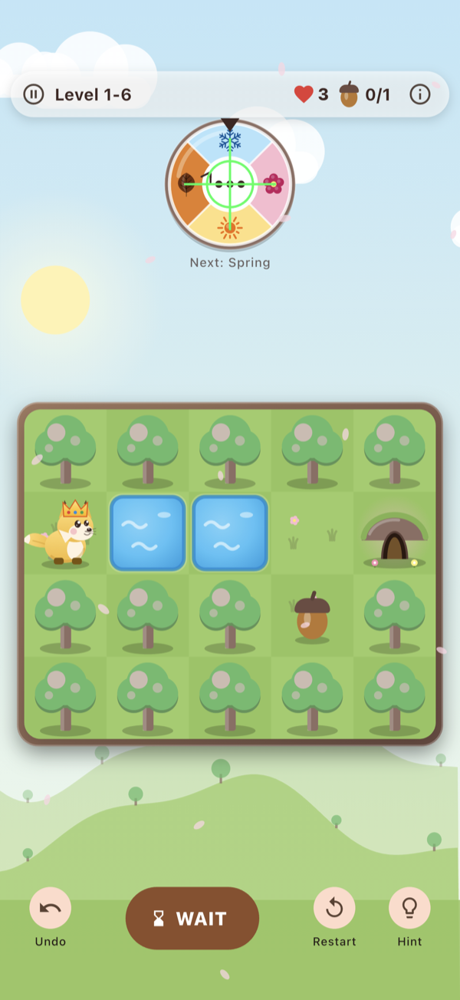
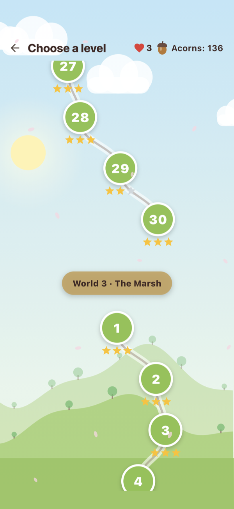

01
Cronometrează fiecare pas
Terenul se schimbă la fiecare câteva acțiuni. Gândește-te unde vei fi când se întâmplă.
UN PUZZLE GOBYDE

Turning Tails
Primăvara înfloresc copacii, vara strălucește soarele, toamna cad frunzele, iarna îngheață apa. Cronometrează fiecare pas și ghidează vulpița până la vizuină.
Turning Tails vine în curând pe Google Play și în App Store.

ANOTIMPURILE SCHIMBĂ HARTA.
01 — EXPERIENȚA
Lacul e apă acum, dar așteaptă până vine iarna și îngheață. Liane te duc peste râu primăvara, apoi se usucă toamna. Fii pe teren sigur exact când se schimbă anotimpul.
01
Terenul se schimbă la fiecare câteva acțiuni. Gândește-te unde vei fi când se întâmplă.
02
Trage cu degetul ca să te miști și atinge AȘTEAPTĂ ca să lași timpul să treacă.
03
Fără cronometre și cu undo nelimitat, gratuit. Nivelurile durează 30–90 de secunde.
04
Strânge ghinde și schimbă pălăria și culoarea blănii vulpiței.
02 — DIRECT DIN JOC
Turning Tails e făcut pentru telefon: o tablă mică, o roată a anotimpurilor și un singur gest ca să te miști.
Ajungi la vizuină înainte ca anotimpul să schimbe terenul de sub tine.

Lacul îngheață, iar gheața te ține. Dar numai cât timp e iarnă.

Ține apăsat pe roată și vezi cum va arăta terenul la următoarea schimbare.

Șase lumi, de la lacul înghețat până la vârf, cu cel puțin 3 stele de câștigat la fiecare.
03 — CUM JOCI
Reguli simple, combinații care te fac să te gândești. Fiecare acțiune apropie schimbarea anotimpului.
Trage cu degetul într-o direcție sau atinge o celulă alăturată.
La fiecare câteva acțiuni vine următorul anotimp, iar terenul sezonier se transformă.
Uneori cea mai bună mutare este AȘTEAPTĂ: lași timpul să treacă și drumul se deschide.
Strânge ghindele și termină în cât mai puține acțiuni pentru trei stele.
CE GĂSEȘTI ÎN JOC
Mici ajutoare și recompense care te țin în joc fără grabă.
Roata anotimpurilor îți arată ce urmează, oricând vrei.
Te-ai înșelat? Dai înapoi gratuit, de câte ori ai nevoie.
Strânge ghinde, câștigă stele și cheltuiește-le pe indicii, pălării și blană.
Viețile revin la fiecare 30 de minute, iar în meniu te așteaptă un cadou în fiecare zi.
04 — LUMILE
Pe măsură ce avansezi, apar tipuri noi de teren care se poartă diferit în fiecare anotimp.
01
Apa devine gheață iarna. Învață să aștepți.
02
Lianele te duc peste râu primăvara și se usucă toamna.
03
Gropi ascunse sub frunze, noroi și zăpadă care se așterne.
04
Florile sunt în siguranță, până se trezesc albinele vara.
05
Totemurile întorc anotimpurile pe dos.
06
Zone înghețate tot anul, unde iarna nu se termină.
05 — ÎN CURÂND
Vom anunța aici și pe rețelele noastre când jocul apare pe Google Play și în App Store. Jocul conține reclame și achiziții opționale; poate fi terminat gratuit.